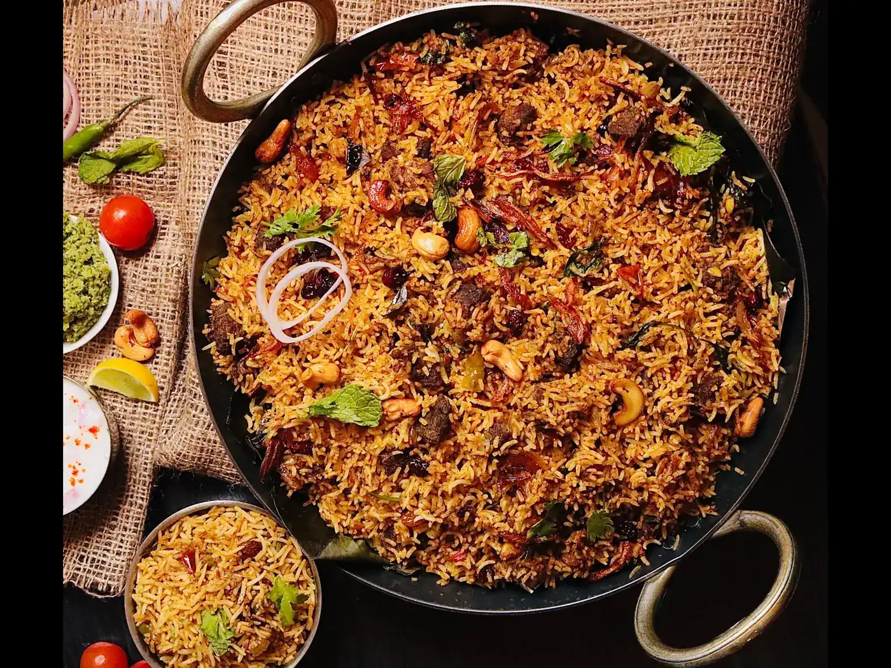
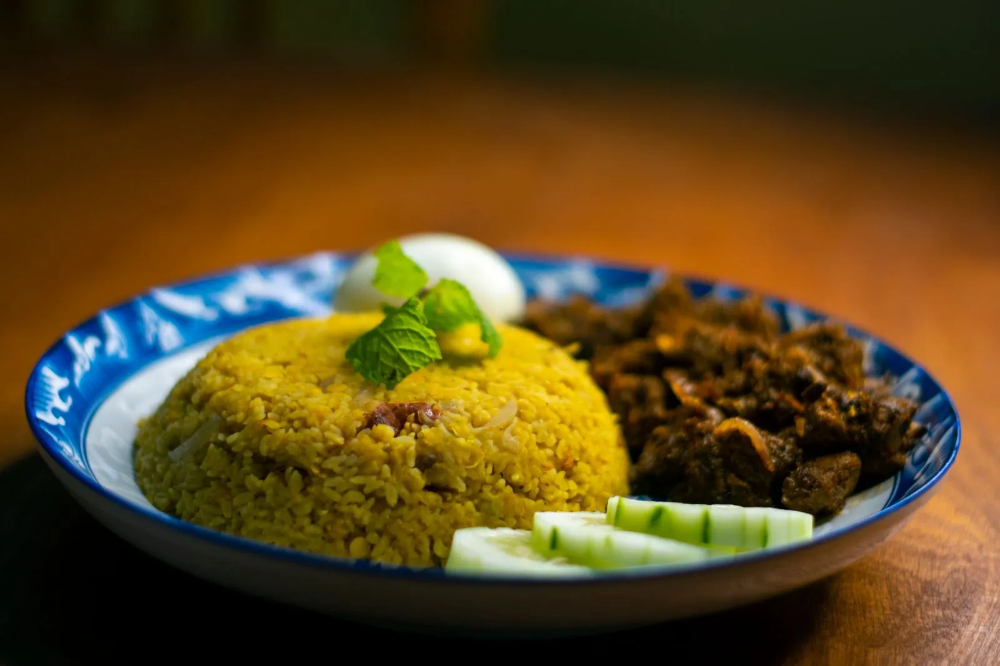
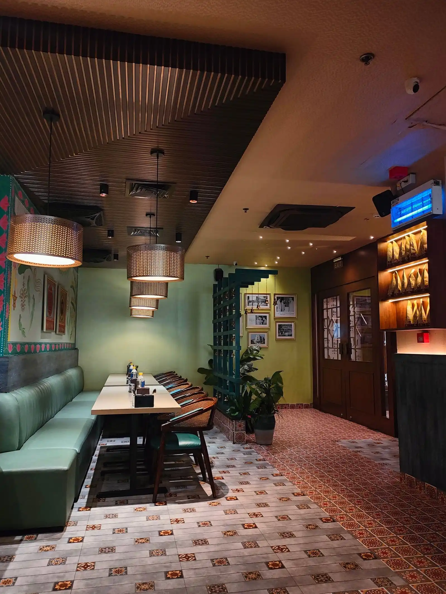
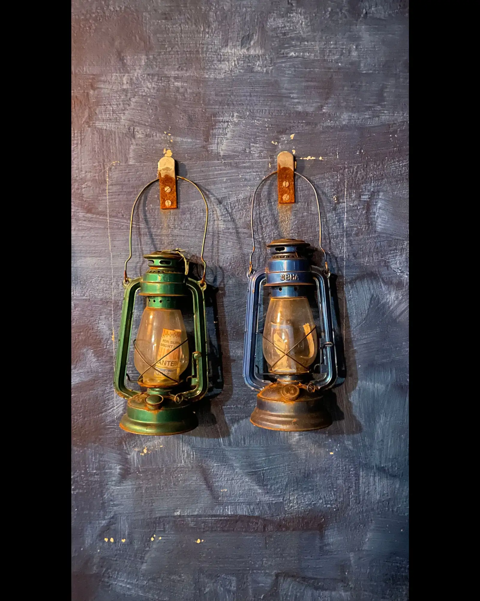
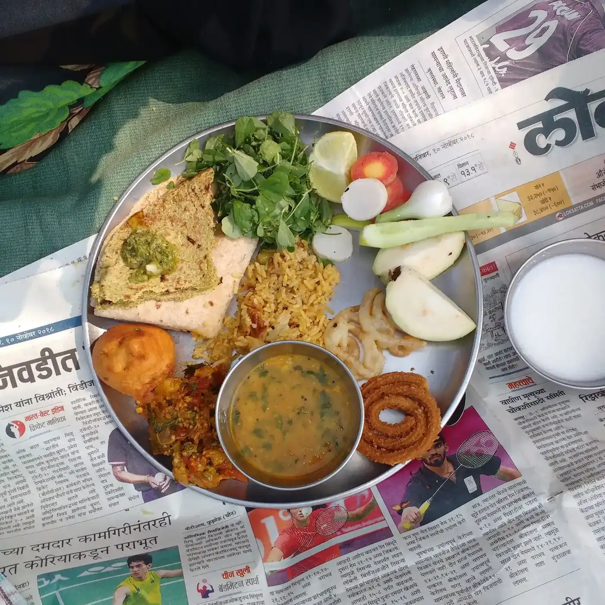
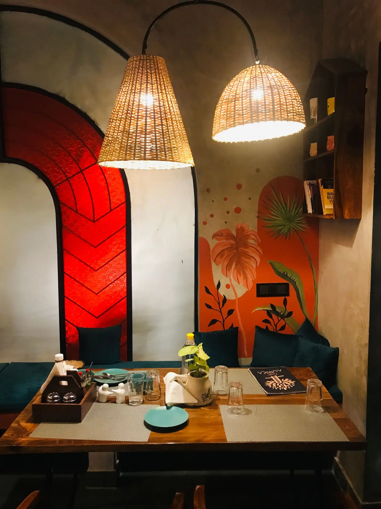

Hawk’s Bay Prawn Biryani
Rich spiced rice and seafood — the centrepiece of the full Bohra spread.
Most orderedBohra cuisine · Clifton Block 8, Karachi
In a lantern-lit corner of Clifton, The East End serves the food of Karachi’s Bohra community as a slow, multi-course set menu — shared from one great thaal, at one unhurried table.
You choose your main and your dessert. The chef chooses everything in between.

01 · The story
The East End began with one cook’s memory. Founder Adil Moosajee started recreating his late grandmother’s Bohra recipes with head chef Gulnaaz — and with partners Muffadal Halai and Fawad Arif, turned them into a restaurant that treats dinner as an occasion, not a transaction.
Inside, the room is dim and nostalgic on purpose: old-school lanterns, vintage suitcases, floating antique windows — a quiet corner of Clifton dressed like the Karachi of the 1960s. A giant crow watches the door; the same crow sits on the restaurant’s own sign.
The cooking draws on the Bohra kitchen first — Gujarati roots, Mughal and Middle Eastern threads — and on the other tables of Karachi too: Memon, Parsi and coastal dishes share the menu. It is the one place in the city built entirely around this cuisine.
“One of the few Bohra food restaurants in Karachi” — the line every review seems to start with.


02 · The thaal
In Bohra tradition the meal is a ritual of sharing: everyone eats from one great steel thaal, set on a cloth called a safra and raised on a stand. The food arrives one dish at a time, so everyone at the table has an equal reach. This is the order it follows.
The thaal is not set until all diners are present — the portions are made for the whole table. Hands are washed with the chelamchi lota, basin and jug.
Everyone tastes a pinch of salt to begin, as a palate cleanser. Out of respect for the food, a thaal is never left unattended.
The first course is a dessert — mithaas before kharaas. A sweet opens the meal, not the other way round.
Small plates and starters arrive one dish at a time, placed in the middle of the thaal for everyone to share.
Roti, curry and rice dishes — biryani, daal chawal, roast — are taken from the serving bowls on the thaal to your own side of the plate.
The last course is light — soup, fruit or dry fruit — followed by one more pinch of salt.
Flavourings wrapped in a betel leaf, served as a mouth freshener. When the thaal is taken away, it must be empty and clean.

The Bohra thaal tradition, as described in Youlin Magazine’s The Culinary Traditions of the Dawoodi Bohra Community.

04 · Private dining
The East End keeps a private dining room for family gatherings — the kind of evening the thaal was made for. One table, one shared meal, nobody in a hurry.
Dinner only, 6:30–11:30 PM. A meal takes about an hour and a half to two hours — plan the evening, not just the table.
05 · Why locals choose The East End
One of the few Bohra restaurants in Karachi — a cuisine the city’s dining scene barely serves anywhere else.
A multi-course dinner that takes its time — about an hour and a half to two hours — with generous portions meant for sharing.
Raan, Bohra fried chicken and prawn biryani are the names that come up again and again in reviews.
Dim light, lanterns, vintage suitcases and a 1960s feel — the room is part of the meal.
Reviewers are frank: it costs more than a desi dinner out. They are just as frank that the experience earns it.
Tucked into a quiet Clifton corner, with limited seats. Book ahead — and let Google Maps do the finding.
“I’ve been to East End many times and it’s been wonderful every time. The overall ambiance, presentation, pairing of drinks with appetisers, selection of main course right down to dessert — the whole experience is delightful.”
— Nisar P., Google Maps review, via Top-Rated.Online
06 · From the table
Tap any plate to see it larger.
07 · Visit
Plot CC, 2 Khaliq-uz-Zaman Road,
behind Eid Gah, Block 8, Park Clifton,
Karachi 75600
Near Punjab Chowrangi and Alliance Française — tucked into a quiet residential corner, so use the map link below.
| Monday – Sunday | 6:30 PM – 11:30 PM |
|---|
Dinner only. The kitchen serves one evening service a day.
08 · Good to know
Yes — reservations are recommended. The dining room is small with limited seats, and the restaurant serves one dinner service an evening. Call 0321 2468246.
You choose your main course and your dessert. The chef chooses the accompanying courses and drinks, served one dish at a time from the shared thaal. Seasonal fruit drinks arrive with the courses.
Plan for about an hour and a half to two hours. It is a slow, multi-course meal — not a quick dinner out.
Dinner only, every day: 6:30 PM to 11:30 PM. There is no lunch service.
Reviewers report parking is not a problem at the Clifton location, despite the quiet residential setting.
Yes — the restaurant has a private dining room for family gatherings and small celebrations. Call ahead to arrange it, as the room is small and books out.
Dinner only · 6:30–11:30 PM
One thaal, seven moments, and an evening that runs at the table’s pace. Call ahead — the room is small, and the kitchen serves one service a night.